Shell & Auth
The persistent app frame — sidebar / bottom tab bar, each route’s own inline account cluster, and the mock sign-in gate (SignInModal / AuthGuard) that every other area assumes is already in place.
| Platform | YouCam Muse Web — captured at 1403×697 (desktop) AND 375×812 (phone), the one exception in this programme (D8) |
| Audience | QA |
| Scope | Signed-in navigation, gated nav vs. gated route entry, header Sign In, account entry points (there is no account menu — see the Feature block), sign-out + reload behavior, and the bare /share page. |
| Out of scope | BuyCreditsModal/SubscribeModal’s own content (area 07 / S5), /profile itself (area 06 / S7), /history itself (area 05 / S4), /share’s own content (S9) — each gets one arrival step here and no further tour. |
| Source | specs/areas/01-app-shell.md, specs/areas/09-auth-onboarding.md, specs/00-overview.md, and the running app |
↓ Flow Diagram — full user journey (click to expand)
Mermaid source
flowchart TD
Entry["Any route, signed in"] --> Nav{Nav click?}
Nav -->|item| Route["Navigate, active state updates (locale-prefixed)"]
Entry --> Guest{Signed out?}
Guest -->|History nav / MobileTabBar tab| GatedNav["SignInModal, target queued"]
GatedNav -->|sign in| Route
GatedNav -->|dismiss| StayPut["Stay put — no redirect"]
Guest -->|direct URL: /history /profile /settings| Guard["AuthGuard: renders nothing, SignInModal opens"]
Guard -->|sign in| SamePage["Same URL now renders"]
Guard -->|dismiss| Home["router.replace(home)"]
Guest -->|Login button, any own-chrome route| HeaderSignIn["SignInModal, no queued action"]
HeaderSignIn -->|sign in| StaySamePage["Same page, logged-in cluster"]
Entry --> Account["Credit pill → Upgrade dialog (S5) · Profile footer → /profile (S7)"]
Entry --> Out{Sign out?}
Out -->|Settings| Reset["Guest defaults, routed Home"]
Entry --> Reload["Full reload: loggedIn persists, subscribed/profile reset (AUTH-E1)"]
| ID | Path | Entry point | Steps | Outcome |
|---|---|---|---|---|
| P1 | Signed-in navigation | Sidebar / MobileTabBar (signed in) | 6 steps | Active route changes; locale prefix carries through |
| P2 | Gated nav while logged out | Sidebar / MobileTabBar (logged out) | 5 steps | SignInModal opens with the target queued; dismiss leaves the user where they were |
| P3 | Header Sign In (no queued action) | /mv/room (guest) | 2 steps | Signed in, in place, with no navigation |
| P4 | Gated route entry (AuthGuard) | /history (direct, guest) | 3 steps | Either the guarded page renders, or the user is redirected Home |
| P5 | Account entry points | Signed-in header / sidebar | 4 steps | Each control’s own destination; confirmation that no menu exists anywhere |
| P6 | Sign out + reload (AUTH-E1) | /settings (signed in) | 4 steps | Guest chrome; a later reload while signed in resets subscription/credits only |
| P7 | Bare page | /share?id=… | 1 steps | No sidebar, no top bar — the share page’s own header only |
Sidebar item click, active state, locale-prefix preservation, and the phone equivalent — the tab bar and its “+” create sheet.
- P1-S1 Opens / while signed in.
- P1-S2 Clicks “AI Music Video” in the sidebar.
- P1-S3 Under the /jpn/ locale prefix, clicks “History”.
- P1-S4 Clicks “Upgrade” in the sidebar profile footer.
- P1-S5 On a 375px phone, opens / while signed in.
- P1-S6 Taps the “+” create button.
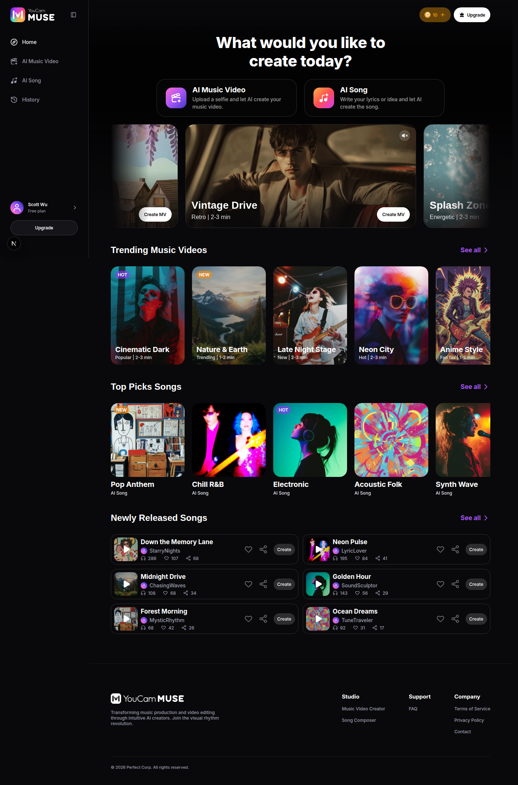
- 1Home (active)
- Nav labels: “Home”, “AI Music Video”, “AI Song”, “History”
- Profile footer: “Scott Wu” · “Free plan”
- Sidebar’s nav labels are the real on-screen text, not area 01’s shorthand.“Create MV”/“Create Song” there are route labels; the app itself reads “AI Music Video”/“AI Song” (D-05).
- The profile footer only renders while signed in (AC-SHELL-01).
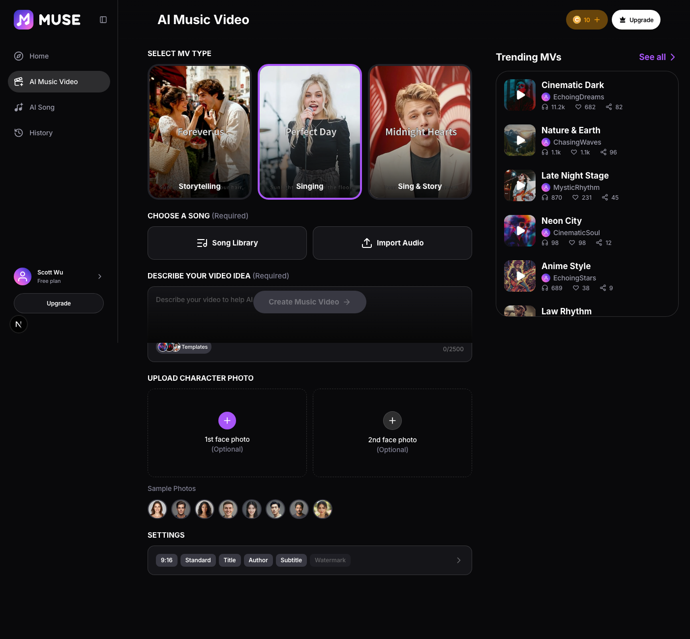
- 1AI Music Video
- Active-state matching is prefix-based (pathname.startsWith), not exact (AC-SHELL-02).
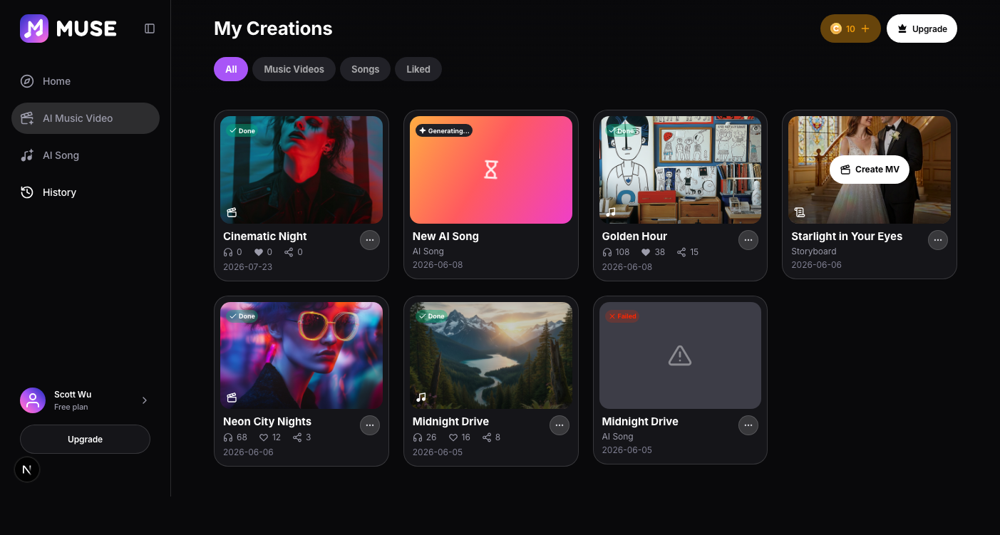
- 1History
- Every in-app Link uses localePath(locale, href), so the prefix survives any nav click (AC-SHELL-02).
- Nav labels stay in English even under /jpn/.jpn.ts is an intentionally empty dictionary; useT() falls back to English per key (00-overview.md §i18n).
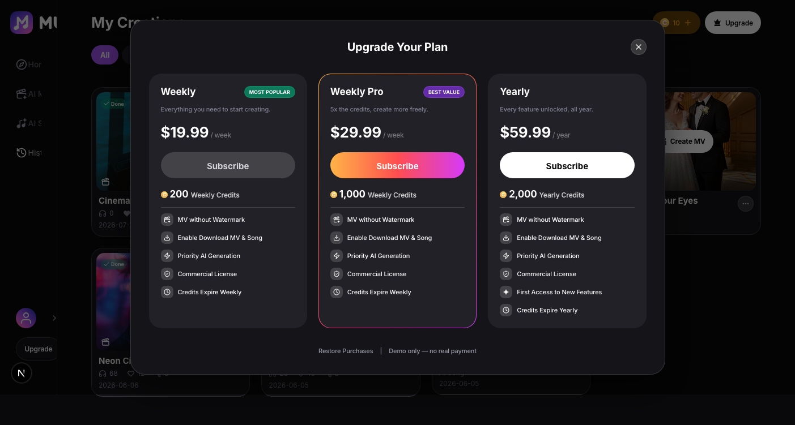
- Its own content and every Subscribe action are S5’s territory — captured opened, not toured further.
- The Upgrade button renders only while signed in and not subscribed (AC-SHELL-05).
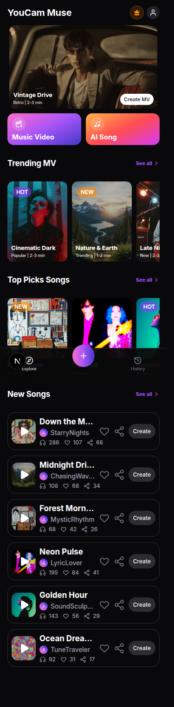
- 1Create (+)
- This chrome exists ONLY on Home and History.MobileTabBar/MobileHeader mount on isHome || pathname starts with /history — every other route (confirmed: /watch, /mv/room, /profile) draws its own back-affordance instead, with no bottom tab bar at all (see the Feature block, finding 3).
- The crown (Upgrade) only renders while not subscribed, same rule as desktop.
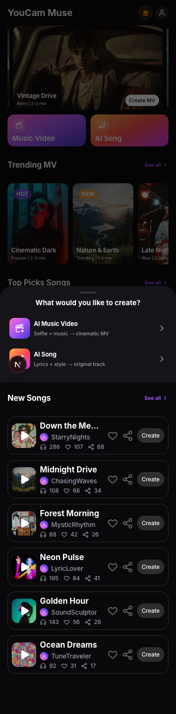
- 1AI Music Video
- Title: “What would you like to create?”
- Options: “AI Music Video” · “Selfie + music → cinematic MV”; “AI Song” · “Lyrics + style → original track”
- Neither option is gated for a guest.Un-gated 2026-08-12 by product decision — a guest may open either compose screen and browse freely; the gate sits on the actions inside them (area 02/03).
- Tapping either option routes there directly and closes the sheet.
History is the only nav item that is both gated AND visible to a guest — on the sidebar and on the phone tab bar.
- P2-S1 Logged out, clicks “History” in the sidebar.
- P2-S2 Dismisses the modal (Escape).
- P2-S3 Clicks “History” again, then signs in (Google).
- P2-S4 On a 375px phone, logged out, taps “History” in MobileTabBar.
- P2-S5 Dismisses the modal.
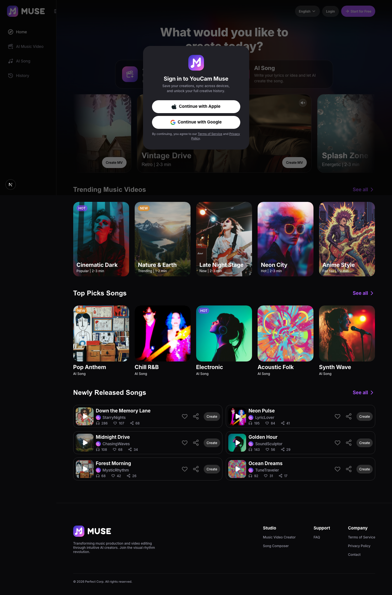
- 1History
- History is the ONLY nav item this can happen on.Create MV/Create Song were removed from GATED on 2026-08-12 (guests may compose freely); Profile’s footer link only renders while signed in, so a guest never sees it to click at all (AC-SHELL-03).
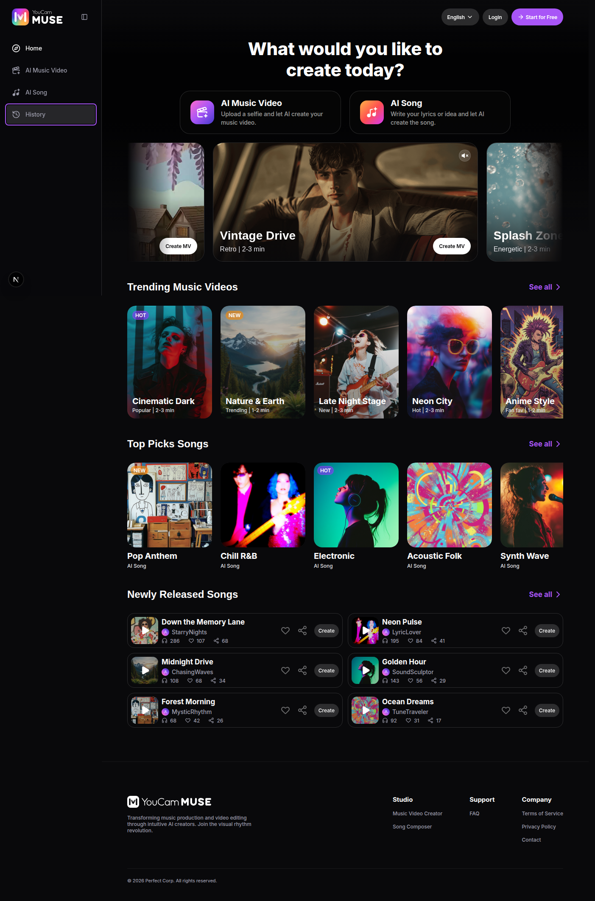
- This is the OPPOSITE of AuthGuard’s dismiss (P4-S2).A gated-nav click has no onCancel, so dismiss is a no-op; AuthGuard passes router.replace(home) as onCancel. Same modal, opposite dismiss behaviour (AC-AUTH-03).
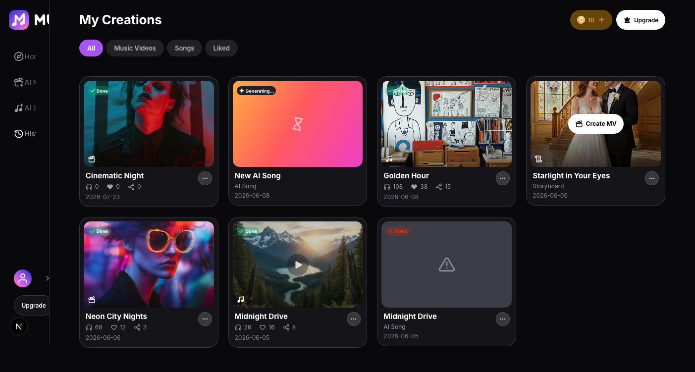
- The queued callback is router.push(target), captured here as the request completing successfully (AC-AUTH-02).
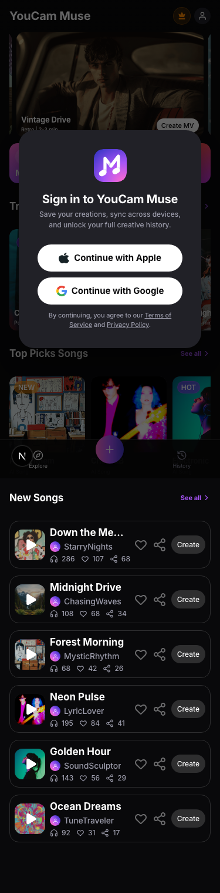
- 1History
- MobileTabBar’s guardHistory is a direct copy of Sidebar’s gate — same GATED set, same requireLogin call.
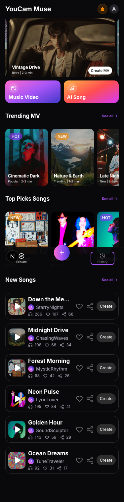
The “Login” control every own-chrome route and the marketing Navbar render inline — not a single global top bar.
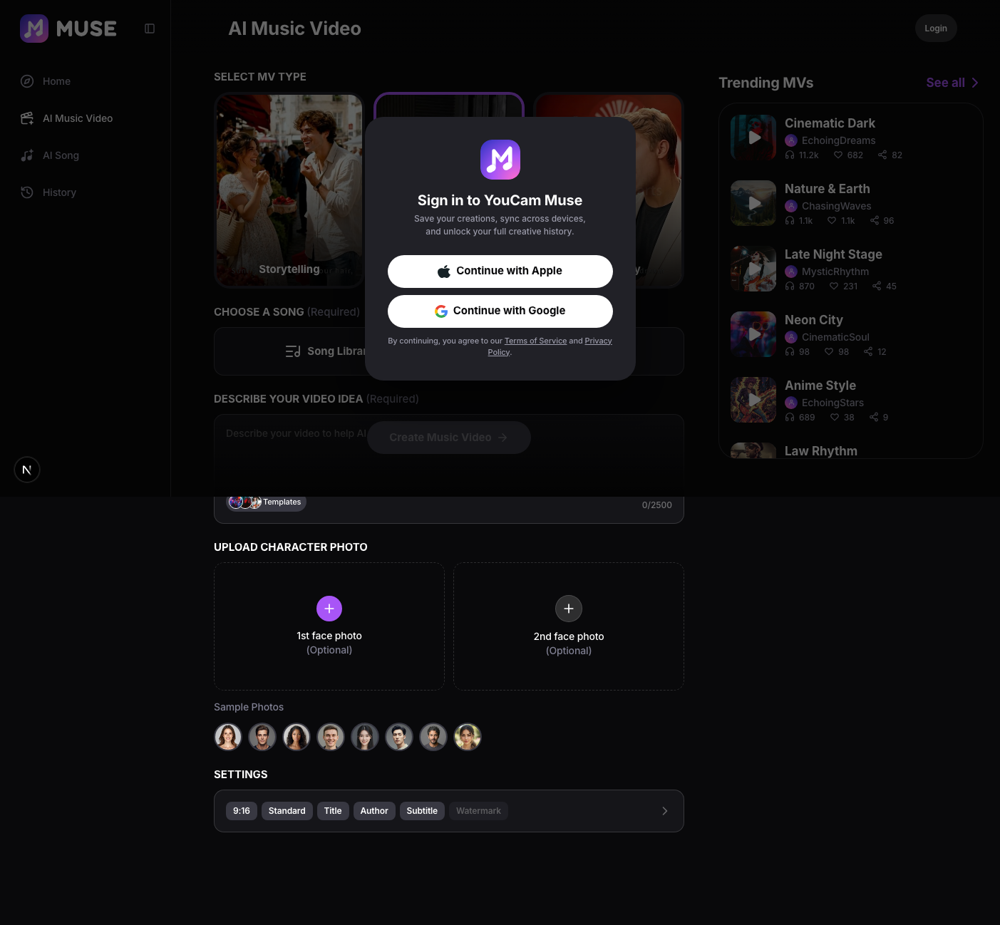
- 1Login
- Login control text: “Login”
- Modal title: “Sign in to YouCam Muse”
- Subtitle: “Save your creations, sync across devices, and unlock your full creative history.”
- Buttons: “Continue with Apple”, “Continue with Google”
- Footer: links to “Terms of Service” and “Privacy Policy”
- /mv/room renders its full compose screen behind the modal, unprompted.Guests are never auto-gated here (AC-AUTH-08) — this modal only opened because Login was clicked.
- The control text is “Login”, never “Sign In”.“Sign In” exists only in the dead HeaderActions component — see the Feature block (AC-SHELL-04).
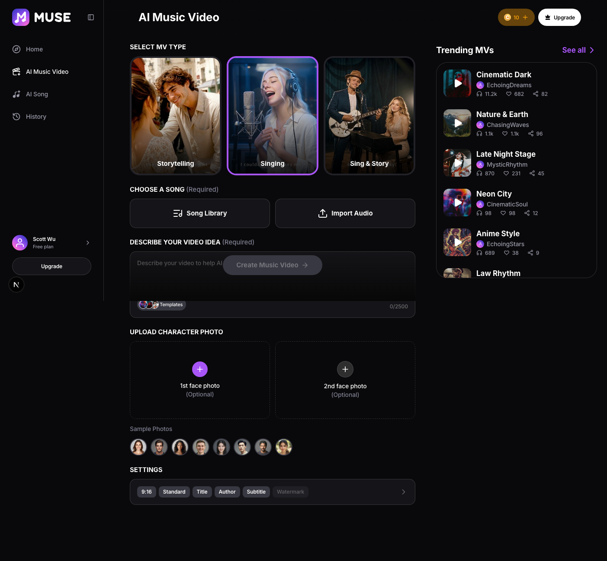
- 1Credits
- Success title: “Signed in successfully!”
- Success subtitle: “Welcome back, Scott · via Apple”
- No navigation happens.openSignIn() queues no onSuccess callback, unlike the gated-nav path (P2) (AC-AUTH-02).
- The logged-in cluster is a credit-balance pill and, while not subscribed, an Upgrade button.No avatar appears — see the Feature block finding 1 (AC-SHELL-05).
Arriving at a personal-data route directly, with no prior nav click — the opposite dismiss behaviour from P2.
- P4-S1 Navigates directly to /history while logged out.
- P4-S2 Dismisses the modal.
- P4-S3 Navigates to /history again, then signs in (Apple).
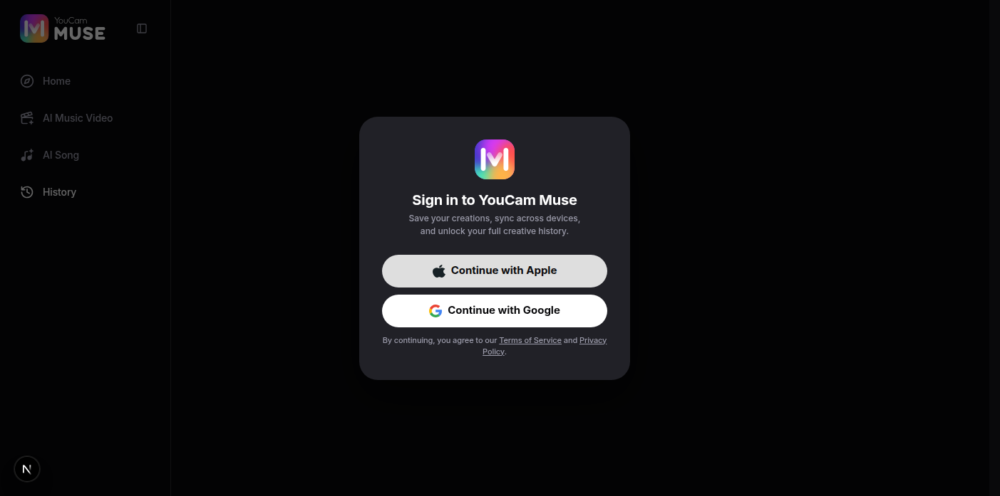
- Same four routes: /history, /profile, /profile/credits, /settings (AC-AUTH-01).
- This queues no onSuccess, but DOES pass an onCancel.requireLogin(undefined, () => router.replace(home)) — the opposite pairing from a gated nav click (P2).
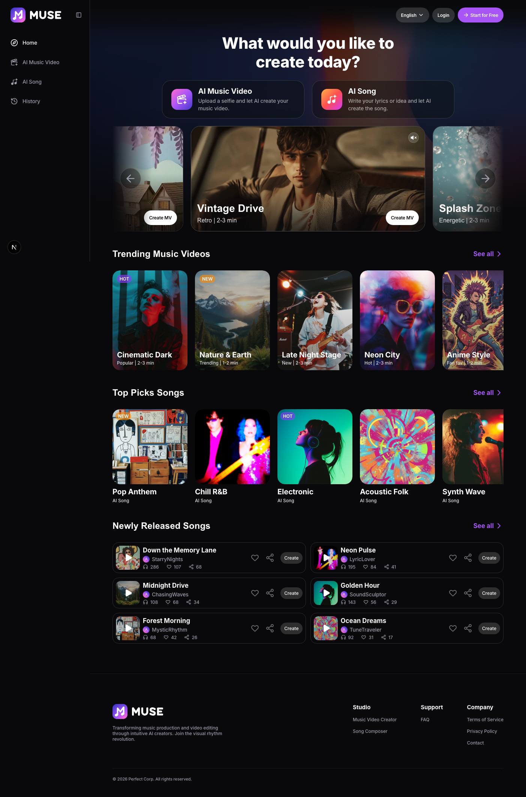
- This is the OPPOSITE of P2-S2’s dismiss.Same SignInModal component, different onCancel wiring depending on the trigger (AC-AUTH-03).
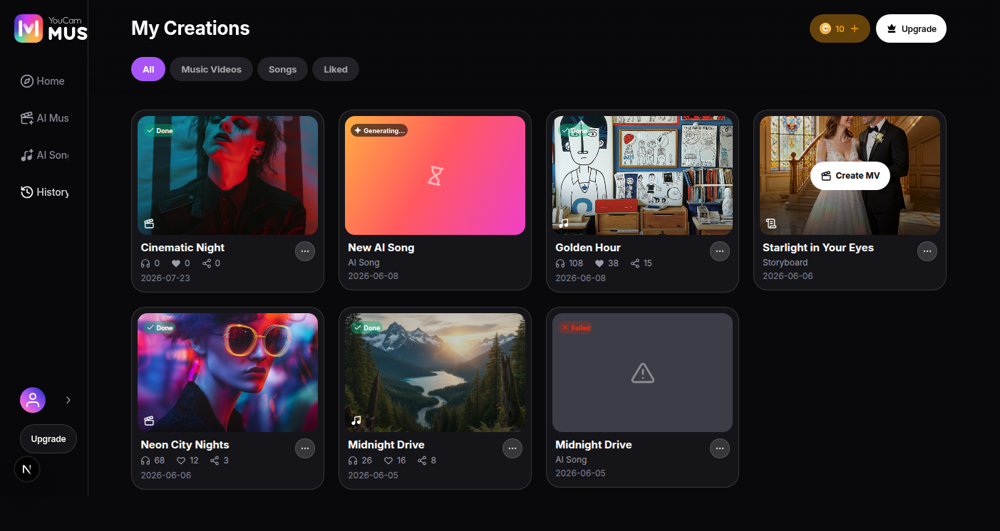
- AuthGuard never pushes a route.It renders null while !loggedIn and its children once loggedIn flips true — the browser was never anywhere but /history.
There is no account MENU — each destination the original design put behind one dropdown is its own separate, reachable control. Renamed from “Account menu, walked in place” for that reason (see the Feature block).
- P5-S1 Signed in on /mv/room, clicks the credit-balance pill.
- P5-S2 Clicks the sidebar profile footer (avatar / name / plan).
- P5-S3 Confirms the account MENU itself has no live entry point on any route (not just the two walked above).
- P5-S4 On a 375px phone, signed in on /history.
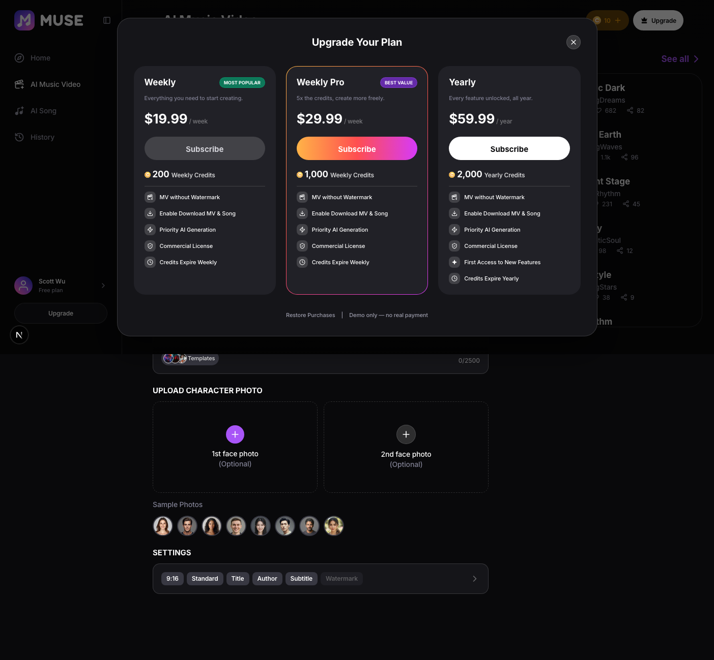
- A non-subscriber’s credit pill never reaches a Buy Credits pack list.BuyCreditsModal returns <SubscribeModal> instead while !subscribed (its own CR-06 comment) — captured as-is, not worked around (D-04).
- Its content is S5’s territory — captured opened, not toured further.
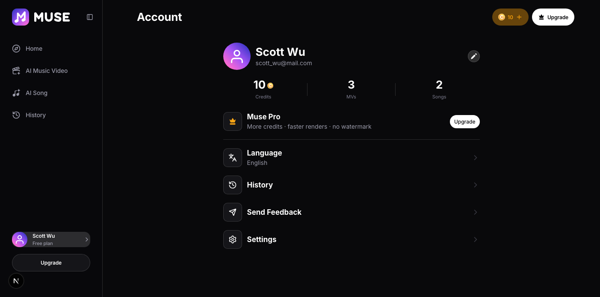
- Profile / My Creations / Send Feedback / Notifications all now live at /profile.Not behind any menu — S7’s territory, captured opened only.
- “My Creations” still exists as a label — just not here.It is /history’s own page title (RoomNavbar), already shown in every P1/P2 History screenshot above.
- There is no account menu in the product — AccountMenu/HeaderActions/TopBar were unreachable dead code and were DELETED on 2026-08-27 (D-10).This sweep was the evidence that raised it. It still holds, now by construction: see the D11 corrections in specs/areas/01-app-shell.md §1 point 5 / §2 / §3, and AC-SHELL-06 (retired).
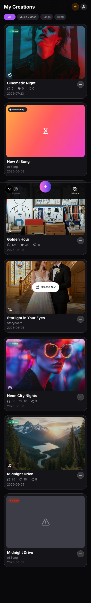
- 1Account (direct link, no menu)
- History shows exactly ONE header on phone, not two stacked.RoomNavbar absorbs MobileHeader’s job here (2026-08-23 fix) rather than mounting both — confirmed live: no .mobile-header exists on this route.
Settings is currently the ONLY sign-out entry point (the account-menu one from area 09 does not exist — see P5). A reload afterward keeps the session but drops the subscription.
- P6-S1 On /settings, clicks “Sign Out”.
- P6-S2 —
- P6-S3 Signs back in and subscribes (Upgrade → Weekly plan → Subscribe).
- P6-S4 Reloads the page.
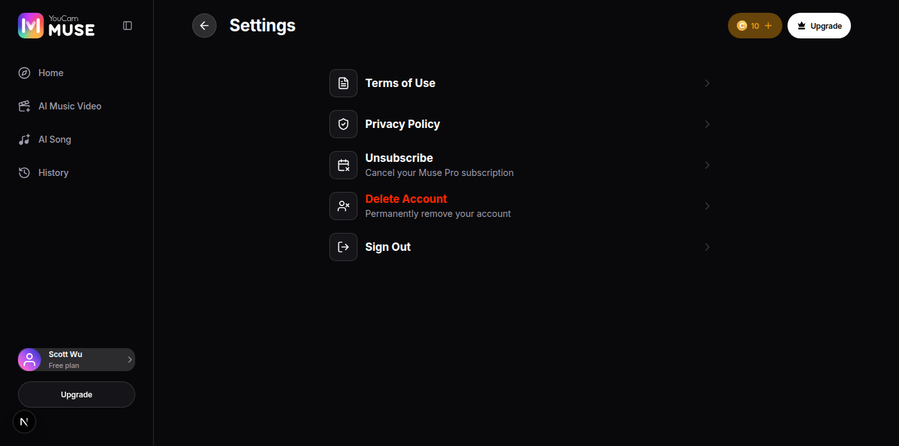
- 1Sign Out
- Settings rows, in order: “Terms of Use”, “Privacy Policy”, “Unsubscribe”, “Delete Account”, “Sign Out”
- This is the only reachable Sign Out control today.Area 09’s “from the header account menu, or from Settings” is corrected — the menu path does not exist (AC-AUTH-05).
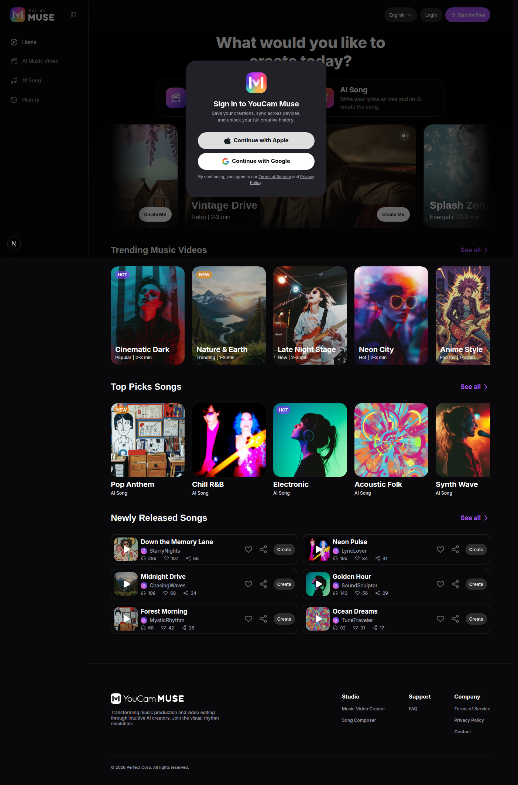
- 1Login
- signOut() clears muse_auth and resets subscribed/profile to guest defaults in the same call (AC-AUTH-05).
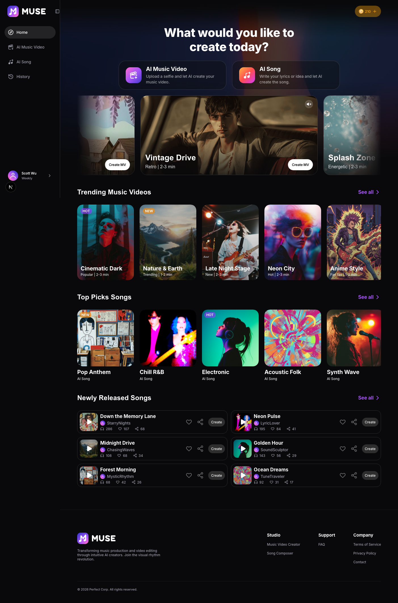
- 1Subscribed plan
- Profile footer plan text: “Weekly”
- Subscribing also credits the plan’s allotment immediately (visible in the credit pill) — not itself an AUTH rule, background only.
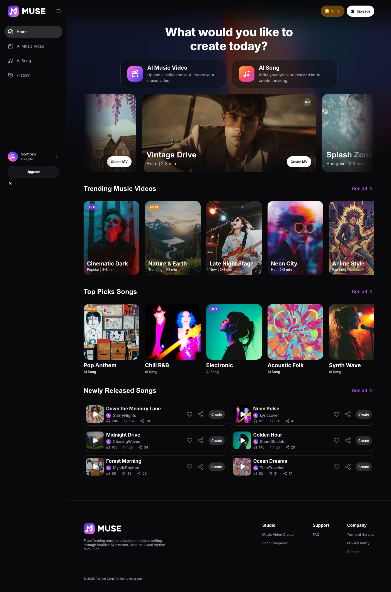
- 1Reset to Free plan
- Profile footer plan text: “Free plan”
- Only the logged-in flag survives a reload.It is the sole value backed by localStorage; subscribed/profile/credits are React state, reset on any full reload (AUTH-E1, 🔒 TBD-GL-04).
- The user is never signed out by this — loggedIn stays true throughout.
The one route the app shell opts out of entirely.
- P7-S1 Opens a /share link.
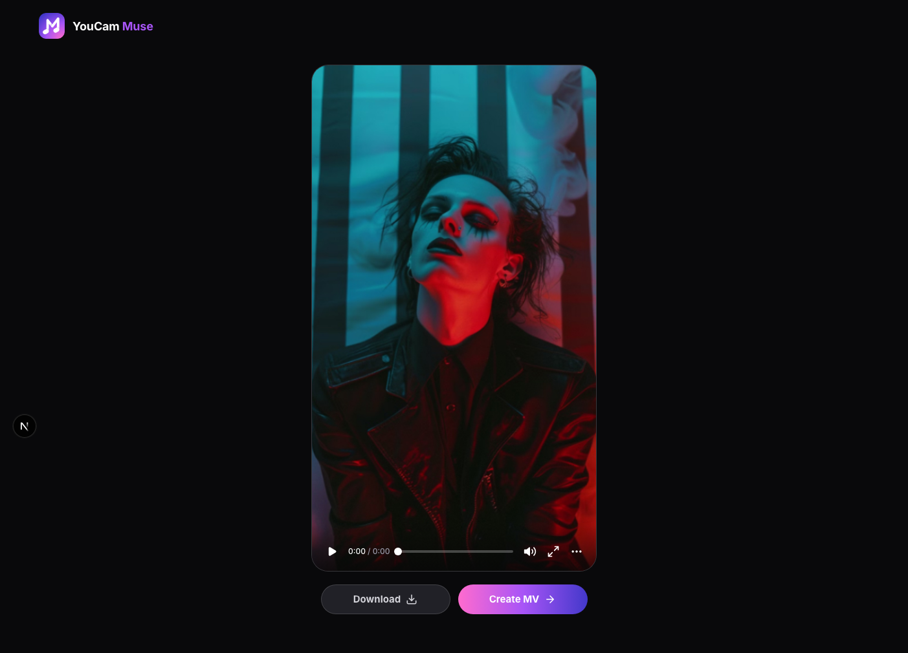
- AppShell strips the locale prefix and checks for a /share start BEFORE deciding any chrome.The check happens ahead of the sidebar/topbar branch entirely (AC-SHELL-07).
- The page’s own content (player, Download/Create MV) is S9’s territory — not toured here.
The contract of each screen state. The flow diagram shows the transitions; this shows what each state must render.
| State | Entry condition | Visible / enabled | Transitions | Exit |
|---|---|---|---|---|
| Header: logged out | No muse_auth in localStorage, or pre-hydration | A single “Login” button; no credits pill, no Upgrade | → logged-in cluster via SignInModal success | — |
| Header: logged in, free | loggedIn true, subscribed false | Credit-balance pill + Upgrade button | → subscribed cluster via SubscribeModal; → guest via Sign Out | Sign Out (Settings) or full reload (resets subscribed only, not loggedIn) |
| Header: logged in, subscribed | subscribed true (React state, in-memory) | Credit-balance pill only, no Upgrade button | → free again on Unsubscribe, sign-out, or ANY reload | Full page reload (AUTH-E1) or Sign Out |
| AccountMenu (dead) | Never reached — no control opens it on any live route | N/A | N/A | N/A — see P5-S3 |
Every acceptance criterion in plan.md and where this spec defines it — 14 of 16 map to a step. Write the test cases in your test tool; this table is the trace back to the spec.
| Criterion | What it asserts | Specified in |
|---|---|---|
| AC-SHELL-01 | Sidebar (≥768px, five destinations) vs. bottom tab bar (<768px, on Home/History only, three items); every other route below 768px shows its own back-affordance instead. | P1-S1 · P1-S5 · P5-S4 |
| AC-SHELL-02 | Nav click navigates under the active locale prefix and reflects the active item. | P1-S2 · P1-S3 |
| AC-SHELL-03 | A logged-out click on the gated History nav item opens SignInModal and proceeds to the queued route on success. | P2-S1 · P2-S3 · P2-S4 |
| AC-SHELL-04 | Logged out: a Login button in each route’s own navbar, no credits badge/avatar. | P3-S1 |
| AC-SHELL-05 | Logged in: the credits pill; an additional Upgrade button while not subscribed. | P3-S2 · P1-S4 |
| AC-SHELL-06 | RETIRED 2026-08-27 (D-10): the account dropdown it described is deleted, so there is nothing left to assert. Its destinations are covered by AC-SHELL-05 (credits/Upgrade), AC-AUTH-05 (Sign Out, Settings-only) and area 06 (Send Feedback). | P5-S3 |
| AC-SHELL-07 | /share renders bare, no sidebar/top bar. | P7-S1 |
| AC-SHELL-08 | Renders at all six widths with no overflow. | Visual-only; six-width sweep is e2e/visual-baseline.spec.ts’s job, not this per-path storyboard (D8: this spec captures 1403×697 and 375×812 only). |
| AC-AUTH-01 | A guarded route entered logged out renders no content and opens SignInModal. | P4-S1 |
| AC-AUTH-08 | /mv/room and /song/create render their full compose screen for a guest with no auto-modal; the gate is action-level inside them. | P3-S1 |
| AC-AUTH-02 | Mock sign-in success sets the persisted flag and runs any queued action. | P2-S3 · P3-S2 |
| AC-AUTH-03 | Dismissing an AuthGuard-opened modal goes Home; dismissing after a gated-nav click leaves the page unchanged. | P4-S2 · P2-S2 |
| AC-AUTH-04 | Modal dismissal is blocked while the success animation plays. | A screenshot cannot show a blocked click — interaction-only, not this storyboard’s shape. |
| AC-AUTH-05 | Sign out clears the logged-in flag and resets subscription/profile to guest defaults. | P6-S1 · P6-S2 |
| AC-AUTH-06 | Only the logged-in flag persists across reload. | P6-S3 · P6-S4 |
| AC-AUTH-07 | SignInModal renders correctly across widths. | P2-S1 · P2-S4 |
| Error | Trigger | Message shown to user | Recovery | Where |
|---|---|---|---|---|
| Account-menu trigger has no live entry point | Any attempt to find an avatar/account-menu control on a signed-in route | “None exists — HeaderActions/TopBar/AccountMenu are unreachable dead code” | Use the reachable equivalents instead: credit-balance pill, Upgrade button, Sidebar profile footer, Settings Sign Out | P5-S3 |
| Pre-hydration flash | First paint, before hydratedStore flips true (SHELL-E1 / AUTH-E2) | “HeaderActions/MobileHeader reserve a fixed-height placeholder instead of flashing logged-out chrome” | Self-resolving once hydrated — not a user action | N/A — a timing window, not a state a static screenshot can depict |
| Cross-tab auth sync | Sign-in/out completed in a second browser tab (AUTH-E4) | “authStore listens for the “storage” event, so this tab’s header updates too” | N/A — automatic | N/A — needs two live browser contexts, not captured in this single-session run |
| Dismissal blocked during the success animation | Escape or backdrop click during the 1.8s post-provider-pick window (AC-AUTH-04) | “onClose is swallowed until the animation completes” | Wait for the animation to finish, then dismiss normally | N/A — a screenshot cannot show a blocked click; interaction-only |
Most of this area’s genuine edge cases are timing or multi-context conditions a static screenshot cannot depict — the “Where” column says so plainly rather than forcing a step reference that does not exist.
Where the prototype fakes or stubs behaviour. Build the production must do column — never the prototype behaviour.
| Area | Prototype does | Production must do |
|---|---|---|
| Sign-in is entirely mock | Picking Apple or Google runs a fixed 1.8s timer, then a canned success message — no real OAuth handshake, no provider is actually contacted. | A real auth integration needs a provider, a session/token model, and a decision on where it sits relative to MuseApi — entirely undefined today (TBD-AUTH-01). |
| Only the logged-in flag persists | subscribed/profile/credits are React state, reset to guest defaults on any full reload or sign-out. | Production must persist all account state server-side, not just a boolean (TBD-GL-04). |
| ID | Question | Decision |
|---|---|---|
| D-01 | P5 was scoped as “Account menu, walked in place” — but the account MENU (AccountMenu.tsx) turned out to have no live trigger anywhere in the app. How to capture it? | Renamed the path “Account entry points” and walked the REACHABLE equivalents instead (credit-balance→Upgrade dialog, sidebar profile footer→/profile), plus a DOM-sweep step proving no menu exists on five routes. Filed as an app-bug finding in the session report (no src/ authority to fix it) and corrected specs/areas/01-app-shell.md §1/§2/§3/AC-SHELL-06 under D11, rather than fabricating a screenshot of dead UI. |
| D-02 | Area 01/09 both quote the logged-out control as “Sign In” — does the live app say that? | No — every reachable trigger (RoomNavbar, DetailNavbar, home/Navbar) renders “Login”. “Sign In” exists only in the dead HeaderActions. This spec quotes “Login” throughout; area 01 AC-SHELL-04 and area 09 AUTH-P1-S1 are corrected. |
| D-03 | Does MobileTabBar/MobileHeader render on every route below 768px, as AC-SHELL-01 implied, or only some? | Only Home and History (confirmed live: absent on /watch, /mv/room, /profile). The phone pass below shoots exactly those two chrome states rather than a generic “phone header” reused elsewhere — there isn’t one. AC-SHELL-01 corrected accordingly. |
| D-04 | A free user’s credit-balance pill opened “Upgrade Your Plan”, not a Buy Credits pack list — bug or intended? | Intended (CR-06, the component’s own code comment: a non-subscriber never reaches the pack list). Captured as-is (P5-S1) rather than forcing a subscribed state first to reach the “real” Buy Credits dialog — that dialog is S5’s territory either way. |
| D-05 | Sidebar’s actual nav-item text is “AI Music Video”/“AI Song”, not area 01’s “Create MV”/“Create Song” — which does this spec quote? | The real on-screen text, everywhere in `exact`. Area 01’s shorthand is a route label, not a claim about the rendered string, so it is left as-is rather than corrected. |
| D-06 | Area 09 says Sign Out is reachable from “the header account menu, or Settings” — both? | Settings only, today — the account-menu path does not exist (D-01). Area 09 AUTH-P4-S1 corrected; P6 captures the one reachable entry point. |
| D-07 | Which non-English locale demonstrates prefix preservation (P1-S3)? | jpn, picked arbitrarily from the 9 supported locales — reached by navigating directly to /jpn/… rather than through a UI language switcher, since a signed-in user has no in-app locale switcher (Navbar’s LanguagePicker only renders logged-out, on Home). |
| D-08 | Phone viewport for the D8 exception? | 375×812 — well inside PHONE_QUERY (max-width: 767px) and the “375” tier of AGENTS.md’s six-width scale. Documented in capture_screenshots.py’s docstring so a later re-capture does not drift. |
| D-09 | Comments layer for this spec? | Disabled — no Firebase backend exists in this repo yet, same as S1/S4. |
| D-10 | Q-01 — the account dropdown (AccountMenu ← HeaderActions ← TopBar) was reachable from no route. Wire a trigger back in, or delete it? | Deleted (product owner, 2026-08-27, same day this build raised it). All three files are removed from src/, and AppShell’s OWN_CHROME list went with them — its only job was gating TopBar. The invariant that replaces it: below /, the shell draws NO header; every route renders its own, so a new route must bring one. This spec’s steps are unchanged by the deletion — every one of them was already photographing the reachable surface, and P5-S3’s negative sweep is now true by construction rather than by accident. Area 01’s AC-SHELL-06 is retired (id kept and struck, not renumbered, so QA traces do not silently re-point). |